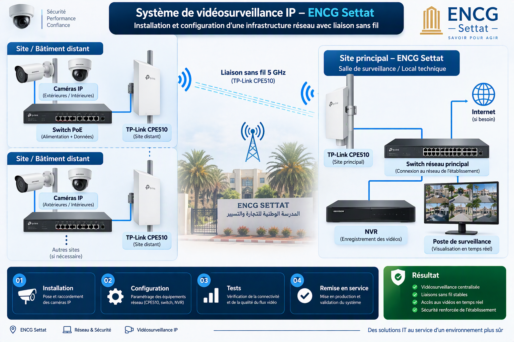

Système de vidéosurveillance IP ENCG Settat
Intervention sur une infrastructure de vidéosurveillance IP intégrant des caméras réseau, des équipements de commutation et des liaisons sans fil TP-Link CPE510 afin d'assurer la transmission des flux vidéo entre différentes zones de l'établissement et le système central de surveillance.
Contexte & objectif
Assurer la transmission et la centralisation des flux vidéo provenant de différentes zones de l'établissement.
Contexte du projet
L'ENCG Settat dispose de plusieurs zones à surveiller. Certaines caméras IP peuvent être installées à distance du local technique ou de la salle de surveillance. L'infrastructure doit permettre de transmettre les flux vidéo des différentes zones vers le réseau principal et le système d'enregistrement central.
Objectifs
Architecture vidéosurveillance & réseau
Représentation simplifiée de la transmission des flux des caméras IP vers la salle de surveillance de l'établissement.

Schéma logique de l'infrastructure : caméras IP, réseau local, liaisons sans fil 5 GHz et centralisation des flux vers le NVR.
Éléments de l'infrastructure
Principaux équipements intervenant dans la transmission et la centralisation des flux vidéo.
Caméras IP
Capture des zones à surveiller et transmission des flux vidéo numériques à travers le réseau.
Switch PoE
Assure la connexion réseau des caméras et, lorsque l'équipement le permet, leur alimentation électrique via Ethernet.
TP-Link CPE510
Équipement extérieur 5 GHz permettant de créer une liaison réseau sans fil entre plusieurs zones de l'établissement.
Réseau principal
Infrastructure réseau transportant les flux des caméras vers le local ou la salle de surveillance.
NVR
Réception, enregistrement et conservation des flux vidéo provenant des caméras IP.
Poste de surveillance
Visualisation des caméras et consultation des flux vidéo et des enregistrements.
Parcours du flux vidéo
Exemple logique de transmission d'une caméra distante vers le système central.
Fonctionnement de la solution
Du captage de l'image jusqu'à l'enregistrement et la visualisation.
Capture vidéo
Les caméras IP capturent les différentes zones de surveillance de l'établissement.
Connexion réseau
Les caméras sont raccordées à l'infrastructure réseau, notamment via des switches.
Zone distante
Lorsqu'une zone est éloignée du réseau principal, une liaison sans fil peut transporter les données vers le site central.
Liaison 5 GHz
Les équipements TP-Link CPE510 assurent la transmission réseau sans fil entre les zones concernées.
Centralisation
Les flux rejoignent le réseau principal puis sont transmis vers le système d'enregistrement NVR.
Surveillance
Le NVR permet l'enregistrement tandis que le poste de surveillance permet la visualisation des caméras.
Travaux réalisés
Principales tâches réalisées lors de l'intervention sur l'infrastructure.
Intervention sur les caméras et vérification de leur fonctionnement.
Vérification et raccordement des équipements à l'infrastructure réseau.
Intervention sur les équipements TP-Link CPE510 utilisés pour transporter les données entre les différentes zones.
Vérification de la communication entre les équipements et le réseau principal.
Vérification de la réception des flux vidéo au niveau du système d'enregistrement.
Tests de connectivité, vérification des flux et validation du bon fonctionnement de la solution.
Technologies & équipements
Résultat de l'intervention
Vidéosurveillance centralisée et fonctionnelle
L'infrastructure permet la transmission des flux vidéo depuis différentes zones de l'établissement vers le système central de surveillance. Les liaisons réseau et sans fil permettent de transporter les données des caméras, tandis que le NVR assure leur enregistrement et leur disponibilité pour la visualisation.